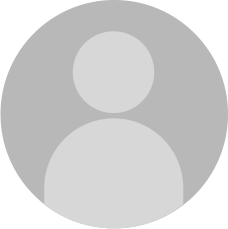

<ion-header>
  <ion-toolbar mode="md">
    <ion-buttons slot="start">
      <ion-menu-button color="dark"></ion-menu-button>

      
    </ion-buttons>

    <!-- <ion-buttons slot="end">

      <ion-button size="large" fill="outline" color="dark">
        <ion-icon slot="start" name="person-circle-outline"></ion-icon>
        Entrar
      </ion-button>
    </ion-buttons> -->
  </ion-toolbar>
</ion-header>


<ion-split-pane (ionSplitPaneVisible)="slipePane($event)" contentId="chat">
  <!--  our side menu  -->
  <ion-menu (ionDidClose)="chatClose()" (ionDidOpen)="chatOpen()" menuId="chat" side="end" type="overlay"
    contentId="chat">
    <ion-header>
      <ion-toolbar color="light">
        <ion-title style="text-align: right;"> {{users}} online </ion-title>
      </ion-toolbar>
    </ion-header>

    <ion-content>

      <app-chat-messages [video]="videoId"></app-chat-messages>

    </ion-content>

    <ion-footer>

      <ng-container *ngIf="authState?.logged;else tempLogged;">
        <ion-toolbar color="light">
          <ion-item color="light">
            <ion-input autofocus="true" maxlength="150" (keydown.enter)="sendMessage()" [(ngModel)]="input"
              placeholder="Escreva aqui um comentario">
            </ion-input>
          </ion-item>
          <ion-buttons slot="end">
            <ion-button (click)="sendMessage()" fill="clear" color="dark" shape="round" slot="end">
              <ion-icon name="send-outline" slot="icon-only"></ion-icon>
            </ion-button>
          </ion-buttons>
        </ion-toolbar>
      </ng-container>
      <ng-template #tempLogged>
        <ion-toolbar color="light">
          <ion-title>
            Entre para interagir
          </ion-title>
        </ion-toolbar>
      </ng-template>

    </ion-footer>
  </ion-menu>

  <!-- the main content -->
  <ion-content id="chat">
    <ion-toolbar color="light">
    </ion-toolbar>
    <div class="video">
      <app-video [videoId]="videoId" (statusVideo)="fromVideo($event)"></app-video>
    </div>
    <div [@animation]="animationsListMessage.length">
      <div class="message" *ngFor="let item of animationsListMessage">
        <ion-item lines="none">
          <ion-avatar slot="start">
             </ion-avatar>
          <ion-label class="ion-text-wrap">
            <ion-text [color]="item?.style">
              <b>{{item?.user}}</b> <br>
            </ion-text>
            <ion-text [color]="item?.style">
              {{item.message}}
            </ion-text>
          </ion-label>
        </ion-item>
      </div>
    </div>


    <ion-toolbar color="light">
      <ion-buttons slot="start">
        <ion-back-button defaultHref="home"></ion-back-button>
      </ion-buttons>
      <ion-buttons slot="end">
        <ion-button (click)="toggleMenuChat()">
          <ion-icon slot="icon-only" name="chatbox-ellipses-outline"></ion-icon>
        </ion-button>
      </ion-buttons>
    </ion-toolbar>


  </ion-content>
</ion-split-pane>